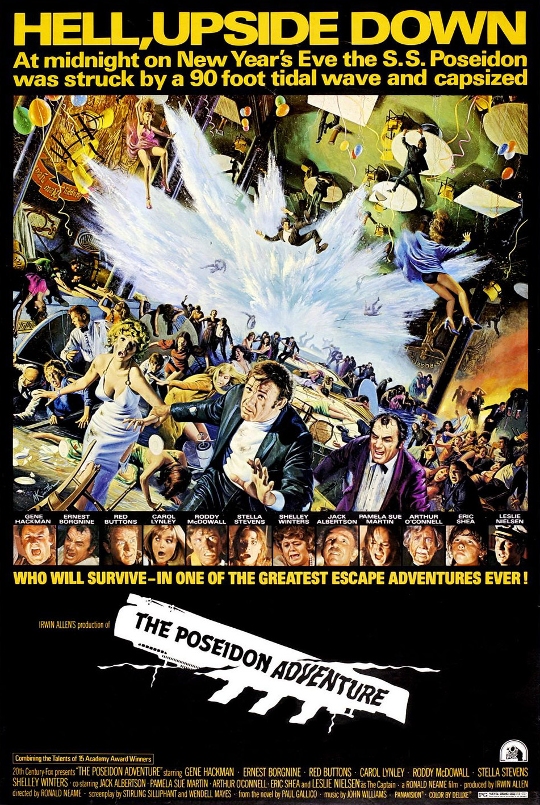

The Poseidon Adventure
45th Academy Awards
(Oscars 1973)
8 Nominations, 2 Awards*
| Nominations | ||
|---|---|---|
| Category | Nominees | Result |
| Actress in a Supporting Role | Shelley Winters | Nominated |
| Cinematography | Harold E. Stine | Nominated |
| Film Editing | Harold F. Kress | Nominated |
| Art Direction | Raphael Bretton and William Creber | Nominated |
| Costume Design | Paul Zastupnevich | Nominated |
| Sound | Herman Lewis and Theodore Soderberg | Nominated |
| Music (Original Dramatic Score) | John Williams | Nominated |
| Music (Song--Original for the Picture) "The Morning After" |
Al Kasha and Joel Hirschhorn | Won |
| Special Achievement Award (Visual Effects) | A. D. Flowers and L. B. Abbott | Won |